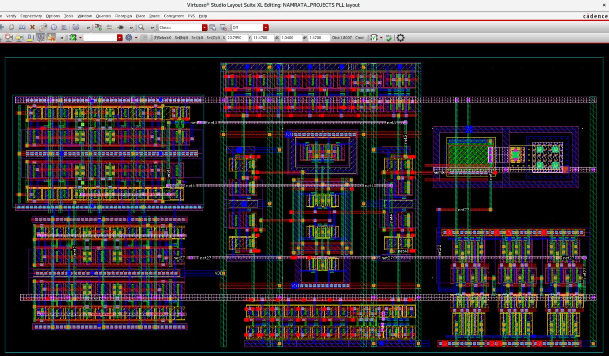

Mixed-Signal IC Design — PLL, SAR ADC, DAC & SerDes
Charge-pump PLL and mixed-signal conversion blocks in GPDK45, from architecture through layout and verification
Cadence Virtuoso · Spectre · GPDK45
Role in the project
Sole author: block-level architecture, transistor-level schematic design, testbench development, pre-layout simulation, layout, and verification, working bottom-up from individual blocks to top-level integration.
Phase-locked loop
A charge-pump PLL decomposed into its constituent blocks, each designed and simulated independently before hierarchical integration.
- Phase-frequency detector — produces up/down pulses proportional to the phase error between reference and feedback clocks.
- Charge pump — converts those pulses into charge delivered to the loop filter; current matching between up and down paths determines static phase offset.
- Loop filter — integrates charge into the VCO control voltage and shapes the loop dynamics.
- Voltage-controlled oscillator — control voltage sets output frequency; the tuning characteristic has to cover the target range with usable linearity.
- Frequency divider — closes the loop and sets the multiplication ratio.
- Clock buffer — drives the distributed clock load without degrading edge quality.
- Top-level integration — hierarchical assembly and transient verification of lock behaviour.


SAR ADC In progress
Successive-approximation converter planned around a sample-and-hold front end, a comparator, a capacitive DAC, SAR control logic, and clock and timing circuitry, integrated at top level. The operating principle is charge-redistribution: the input is sampled onto the capacitive array, then the SAR logic drives a binary search in which the comparator resolves one bit per cycle.
Digital-to-analog converter In progress
Architecture selection between capacitive, R-2R ladder, and current-steering approaches is still open; the page will state the implemented topology once it is built.
Serializer and deserializer In progress
Parallel-to-serial and serial-to-parallel conversion with the associated clocking and timing, functional verification, and top-level integration. Related 8:1 serializer and 1:8 deserializer structures have been built in the digital custom IC work.
Design flow
Key learnings
- In a PLL the blocks are only meaningful together — a VCO that meets spec alone can still break lock.
- Charge-pump current matching is a small design detail with a large system-level consequence.
- Bottom-up block verification saves far more time than debugging at top level.